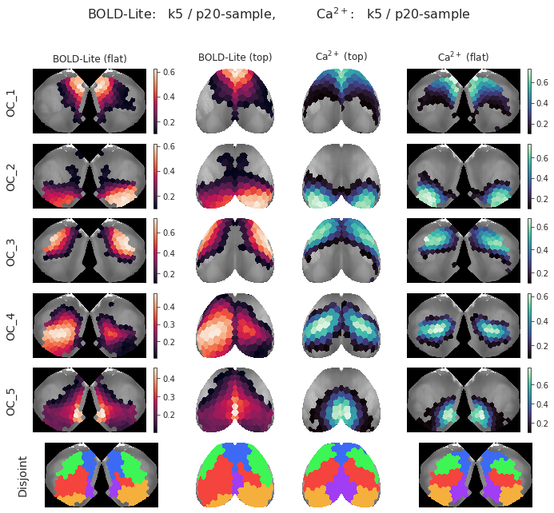
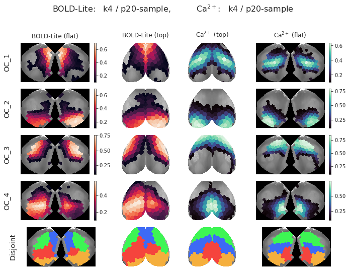
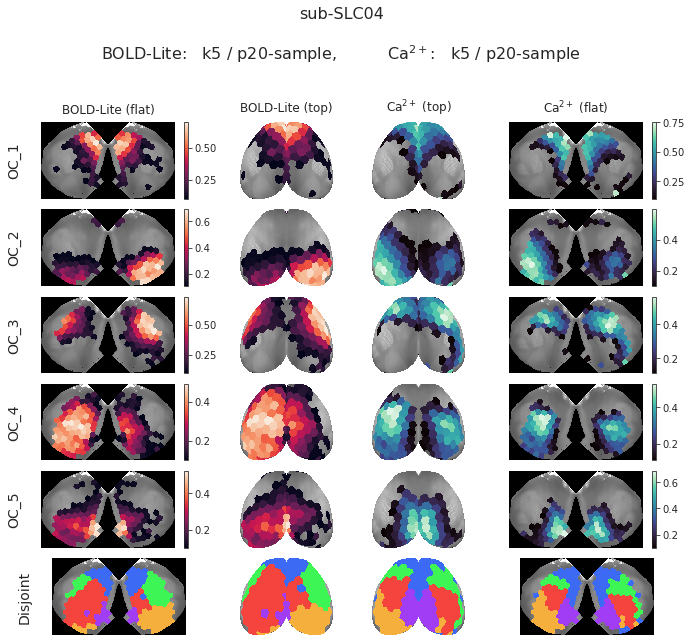

Jan 26th, 2022 (cleaner figs, SE bug)#
Motivation: Many figure functions. Encountered a possible bug in individual bootstrap.
Show code cell source
# HIDE CODE
import os
import sys
import nibabel as nib
import networkx as nx
from time import time
from pprint import pprint
from copy import deepcopy as dc
from os.path import join as pjoin
from myterial import orange, blue_grey
from IPython.display import display, IFrame, HTML
from matplotlib.colors import rgb2hex, to_rgb
import matplotlib.pyplot as plt
import seaborn as sns
# set style & no interpolalation
import matplotlib
matplotlib.rcParams['image.interpolation'] = 'none'
sns.set_style('whitegrid')
%matplotlib inline
# tmp & extras dir
git_dir = pjoin(os.environ['HOME'], 'Dropbox/git')
tmp_dir = pjoin(git_dir, 'jb-Ca-fMRI/tmp')
extras_dir = pjoin(git_dir, 'jb-Ca-fMRI/_extras')
lfr_dir = pjoin(os.environ['HOME'], 'Documents/workspaces/lfr/binary_overlapping')
# GitHub
sys.path.insert(0, pjoin(git_dir, '_Ca-fMRI'))
from register.atlas import make_tree_graph
from register.parcellation import Parcellation
from analysis.hierarchical import Hierarchical
from analysis.fourier import *
from analysis.bootstrap import *
from analysis.svinet import *
from analysis.group import *
from analysis.lfr import *
from utils.render import *
from utils.plotting import *
from model.mouse import Mice
from model.configuration import Config
# warnings
import warnings
warnings.filterwarnings('ignore', category=DeprecationWarning)
Show code cell source
# HIDE CODE
from scipy.ndimage import gaussian_filter
def show_h(proj_h, proj_hr, idx: int = 0, cmap='icefire', interp='antialiased'):
fig, axes = create_figure(1, 4, (10., 2), gridspec_kw={'width_ratios': [1.8, 1, 1, 1.8]})
x2plt = proj_h['flat'][idx]
x2plt = gaussian_filter(x2plt, sigma=1)
x2plt = np.ma.masked_where(x2plt < 0.01, x2plt)
im = axes[0].imshow(x2plt, cmap=cmap, interpolation=interp)
plt.colorbar(im, ax=axes[0], shrink=0.4)
x2plt = proj_h['top'][idx]
x2plt = gaussian_filter(x2plt, sigma=1)
x2plt = np.ma.masked_where(x2plt < 0.01, x2plt)
axes[1].imshow(x2plt, cmap=cmap, interpolation=interp)
x2plt = proj_hr['top'][idx]
x2plt = gaussian_filter(x2plt, sigma=1)
x2plt = np.ma.masked_where(x2plt < 0.01, x2plt)
axes[2].imshow(x2plt, cmap=cmap, interpolation=interp)
x2plt = proj_hr['flat'][idx]
x2plt = gaussian_filter(x2plt, sigma=1)
x2plt = np.ma.masked_where(x2plt < 0.01, x2plt)
im = axes[3].imshow(x2plt, cmap=cmap, interpolation=interp)
plt.colorbar(im, ax=axes[3], shrink=0.4)
remove_ticks(axes)
plt.show()
def plot_cartography(
df: pd.DataFrame,
palette: Dict[str, str],
xlim: Tuple[float, float] = None,
ylim: Tuple[float, float] = None,
grid: bool = True,
display: bool = True,
leg_size: float = 14,
size: float = 7,
scatter_kws: dict = None,
density_kws: dict = None,
median_kws: dict = None, ):
scatter_kws = scatter_kws if scatter_kws else {
's': 120,
'alpha': 0.9,
'edgecolor': 'dimgrey',
}
density_kws = density_kws if density_kws else {
'lw': 2,
'fill': True,
'alpha': 0.5,
}
median_kws = median_kws if median_kws else {
'lw': 2,
'ls': '--',
'zorder': 0,
'alpha': 1.0,
'c': sns.color_palette('deep')[7],
}
jg = sns.JointGrid(
data=df,
x='entropy',
y='degree',
hue='oc_idx',
size=size,
palette=palette,
xlim=xlim,
ylim=ylim,
space=0.0,
)
# joint: scatter
jg.plot_joint(
sns.scatterplot,
hue='oc_idx',
**scatter_kws,
)
# margnials: density
jg.plot_marginals(
sns.kdeplot,
**density_kws,
)
# medians
for name in ['entropy', 'degree']:
x = df[name].median()
lbl = f"median {name}: {x:.2f}"
if name == 'entropy':
jg.ax_joint.axvline(x, label=lbl, **median_kws)
else:
jg.ax_joint.axhline(x, label=lbl, **median_kws)
# legend
jg.ax_joint.legend(loc='upper left', prop={'size': leg_size})
leg = leg = jg.ax_joint.get_legend()
if leg is not None:
plt.setp(leg, bbox_to_anchor=(1.3, 1.0))
if grid:
jg.ax_joint.grid()
if display:
plt.show()
else:
plt.close()
return jg
def plot_swarm(
df: pd.DataFrame,
palette: dict,
variable: str = 'entropy',
display: bool = True,
**kwargs, ):
defaults = {
'sensory_idxs': [2, 3],
'kind': 'swarm',
'aspect': 1.2,
's': 12,
'x_fontsize': 15,
'title_fontsize': 15,
'xtick_labelsize': 13,
'ytick_labelsize': 14,
}
for k, v in defaults.items():
if k not in kwargs:
kwargs[k] = v
median = df[variable].median()
sns.set_theme(style='ticks')
fg = sns.catplot(
x=variable,
y='tag',
data=df,
hue='oc_idx',
col='oc_type',
order=sorted(df['tag'].unique()),
palette=palette,
kind=kwargs['kind'],
aspect=kwargs['aspect'],
s=kwargs['s'],
)
for ax in fg.axes.ravel():
ax.axvline(
x=median,
ls='--',
lw=2,
alpha=1.0,
c=sns.color_palette('deep')[7],
label=f"median {variable}: {median:.2f}",
zorder=0,
)
ax.tick_params('x', labelsize=kwargs['xtick_labelsize'])
ax.tick_params('y', labelsize=kwargs['ytick_labelsize'])
ax.title.set_fontsize(kwargs['title_fontsize'])
ax.set_xlabel(variable, fontsize=kwargs['x_fontsize'])
ax.set_ylabel('')
ax.grid(axis='y')
if display:
plt.show()
else:
plt.close()
return fg
Prepare#
mice = Mice((128, 0, 100))
mice.setup_func_data('rest')
mako = sns.color_palette('mako', as_cmap=True)
rocket = sns.color_palette('rocket', as_cmap=True)
pal = {'ca2': mako(0.6), 'bold-lite': rocket(0.6)}
props_base = {
'num_k': 5,
'mice': mice,
'task': 'rest',
'metric': 'pearson',
'match_using': 'gam',
'match_metric': 'euclidean',
'graph_type': 'real',
'verbose': False,
}
props_ca = {'perc': 'p20-sample', **props_base}
props_bold = {'perc': 'p20-sample', **props_base}
gr_ca = Group(mode='ca2', centroids_from='runs', **props_ca).fit_group(skip_align=False)
gr_bold = Group(mode='bold-lite', centroids_from='runs', **props_bold).fit_group(skip_align=False)
sim = dist2sim(sp_dist.cdist(
XA=gr_bold.grp_pi,
XB=gr_ca.grp_pi,
metric='cosine',
))
mapping = find_best_match(sim)
ids = list(mapping.values())
gr_bold.pi = gr_bold.grp_pi
gr_ca.pi = gr_ca.grp_pi[ids]
proj_bold = gr_bold.project_vec()
proj_ca = gr_ca.project_vec()
Group#
Memberships#
fig, _ = gr_ca.show(
proj_bold, proj_ca,
labels=('BOLD-Lite', r'Ca$^{2+}$'),
cmaps=('rocket', 'mako'),
display=False,
)
sup = f"BOLD-Lite: k{props_bold.get('num_k')} / {props_bold.get('perc')}, "
sup += r"Ca$^{2+}$: " + f"k{props_ca.get('num_k')} / {props_ca.get('perc')}"
sup = fig.suptitle(sup, fontsize=16, y=1.02)
fig

Proportions#
# Load SciPy boot
boot_bca = 'boot-BCa_group_1.0e+03_(2022_01_26).npy'
boot_bca = np.load(pjoin(tmp_dir, boot_bca), allow_pickle=True)
boot_bca = boot_bca.item()
# Load full boot
boot_gam = 'boot-GAM_group_1.0e+03_(2022_01_26).npy'
boot_gam = np.load(pjoin(tmp_dir, boot_gam), allow_pickle=True)
boot_gam = boot_gam.item()
# Prepare gam booted
_stat = mk_statistic_fn(gr_bold.bins, est_seed=None)
output_booted_ca = _stat(boot_gam['ca2'])
output_booted_bold = _stat(boot_gam['bold-lite'])
boot_gam['ca2'].shape, output_booted_ca['cut'].shape, output_booted_ca['cut_avg'].shape
((1000, 10, 3, 4, 5, 174), (1000, 10, 5, 4), (1000, 5, 4))
gr_ca.anim_cut.std(0, ddof=1) / np.sqrt(10)
array([[2.43730501, 0.99117844, 2.07657219, 2.03913143], [1.75769787, 1.60623069, 1.73644921, 3.24905565], [2.393746 , 1.50586871, 1.18249995, 2.79260771], [1.42274548, 1.06888679, 1.67237912, 1.02185087], [2.76135304, 1.26142689, 1.34429134, 4.23653593]])
boot_bca['ca2']['se']
array([[3.34299665, 1.53722588, 2.39201063, 3.18988577], [2.25049429, 1.75223923, 2.40392498, 3.82502352], [3.00903826, 2.12449068, 1.84653656, 3.38038528], [2.10925804, 1.60947389, 2.10703868, 1.27337126], [2.93063614, 1.42649219, 1.72244017, 4.44528582]])
output_booted_ca['cut_avg'].std(0, ddof=1)
array([[3.31429605, 1.51351319, 2.40832285, 3.27254895], [2.26518967, 1.76942482, 2.28384568, 3.63173335], [2.88452489, 1.98963098, 1.74505909, 3.12958875], [2.05131701, 1.62155508, 2.01174469, 1.26062329], [2.89172646, 1.50390603, 1.79898996, 4.49764132]])
plt.plot((gr_ca.anim_cut.std(0, ddof=1) / np.sqrt(10)).ravel())
plt.plot(boot_bca['ca2']['se'].ravel())
plt.plot(output_booted_ca['cut_avg'].std(0, ddof=1).ravel())
[<matplotlib.lines.Line2D object at 0x7f86fc5be820>]

delta = (
boot_bca['ca2']['se'] - output_booted_ca['cut_avg'].std(0, ddof=1)
) / output_booted_ca['cut_avg'].std(0)
np.round(delta * 100, 1)
array([[ 0.9, 1.6, -0.7, -2.5], [-0.6, -1. , 5.3, 5.3], [ 4.3, 6.8, 5.8, 8. ], [ 2.8, -0.7, 4.7, 1. ], [ 1.3, -5.2, -4.3, -1.2]])
boot_bca['ca2']['se'].shape
(5, 4)
df_boot_bold = gr_bold.mk_boot_df(boot_bca)
df_boot_ca = gr_ca.mk_boot_df(boot_bca)
figs, sups, axes, axes_inset = plot_proportions(
df=df_boot_ca,
inset_kind='kde',
inset_data=output_booted_ca['cut_avg'][..., -1].T,
save_file=pjoin(tmp_dir, f"Fig-1_ca2_{now()}.pdf"),
)
figs[-1]
/home/hadi/Dropbox/git/jb-Ca-fMRI/tmp/Fig-1_ca2_(2022_01_26).pdf
done.
figs, sups, axes, axes_inset = plot_proportions(
df=df_boot_bold,
inset_kind='kde',
inset_data=output_booted_bold['cut_avg'][..., -1].T,
save_file=pjoin(tmp_dir, f"Fig-1_bold-lite_{now()}.pdf"),
)
figs[-1]
/home/hadi/Dropbox/git/jb-Ca-fMRI/tmp/Fig-1_bold-lite_(2022_01_26).pdf
done.
Percent nodes with mixed membership#
Show code cell source
# HIDE CODE
theta_all = collections.defaultdict(dict)
dlist1, dlist2 = [], []
for k in range(2, 9):
props = props_base.copy()
props['num_k'] = k
props_ca = {'perc': 'p20-sample', **props}
props_bold = {'perc': 'p20-sample', **props}
# Group results
_gr_ca = Group(
mode='ca2',
centroids_from='runs',
**props_ca,
).fit_group(skip_align=False)
_gr_bold = Group(
mode='bold-lite',
centroids_from='runs',
**props_bold,
).fit_group(skip_align=False)
maxmem = {
'ca2': _gr_ca.run_maxmem.ravel(),
'bold-lite': _gr_bold.run_maxmem.ravel(),
}
for mode, x in maxmem.items():
dlist1.append({
'maxmem': x,
'K': [k] * len(x),
'mode': [mode] * len(x),
})
theta = {
'ca2': bn.nanmean(bn.nanmean(_gr_ca.run_theta, -1), -1),
'bold-lite': bn.nanmean(bn.nanmean(_gr_bold.run_theta, -1), -1),
}
for mode, x in theta.items():
dlist2.append({
'theta': x,
'K': [k] * len(x),
'mode': [mode] * len(x),
'animal': range(1, len(x) + 1),
})
theta_all[k] = theta
df1 = pd.DataFrame(merge_dicts(dlist1))
df2 = pd.DataFrame(merge_dicts(dlist2))
Show code cell source
# HIDE CODE
fig, axes = create_figure(1, 3, (12, 4))
for ax, k in zip(axes[:2], [3, 4, 5]):
ax.axvspan(
xmin=0.8,
xmax=1.0,
lw=2,
alpha=0.2,
color='dimgrey',
label='Disjoint zone',
)
sns.ecdfplot(
data=df1.loc[df1['K'] == k],
x='maxmem',
hue='mode',
palette=pal,
lw=3,
ax=ax,
)
ax.set_ylabel(r'Proportion', fontsize=15)
ax.set_xlabel(r'Maximum membership', fontsize=15)
ax.set_xlim(0.18, 1.0)
ax.grid()
ax = axes[-1]
sns.violinplot(
data=df2,
x='K',
y='theta',
hue='mode',
inner="quartile",
palette=pal,
split=True,
ax=ax,
)
ax.set_ylabel(r'$<\theta>$', fontsize=15)
ax.set_xlabel(r'num $K$', fontsize=15)
ax.tick_params('both', labelsize=13)
ax.grid()
plt.show()

Ca vs BOLD similarity#
Plots for k in [2, …, 8]#
Show code cell source
# HIDE CODE
for k in range(2, 9):
props = props_base.copy()
props['num_k'] = k
props_ca = {'perc': 'p20-sample', **props}
props_bold = {'perc': 'p20-sample', **props}
# Group results
_gr_ca = Group(
mode='ca2',
centroids_from='runs',
**props_ca,
).fit_group(skip_align=False)
_gr_bold = Group(
mode='bold-lite',
centroids_from='runs',
**props_bold,
).fit_group(skip_align=False)
sim = dist2sim(sp_dist.cdist(
XA=_gr_bold.grp_pi,
XB=_gr_ca.grp_pi,
metric='cosine',
))
mapping = find_best_match(sim)
ids = list(mapping.values())
_gr_bold.pi = _gr_bold.grp_pi
_gr_ca.pi = _gr_ca.grp_pi[ids]
proj_bold = _gr_bold.project_vec()
proj_ca = _gr_ca.project_vec()
fig, _ = _gr_ca.show(
proj_bold, proj_ca,
labels=('BOLD-Lite', r'Ca$^{2+}$'),
cmaps=('rocket', 'mako'),
display=False,
)
sup = f"BOLD-Lite: k{props_bold.get('num_k')} / {props_bold.get('perc')}, "
sup += r"Ca$^{2+}$: " + f"k{props_ca.get('num_k')} / {props_ca.get('perc')}"
sup = fig.suptitle(sup, fontsize=16, y=1.02)
display(fig)



Scores (cosine + hamming)#
Show code cell source
# HIDE CODE
scores_cos, scores_ham = {}, {}
for k in range(2, 9):
props = props_base.copy()
props['num_k'] = k
props_ca = {'perc': 'p20-sample', **props}
props_bold = {'perc': 'p20-sample', **props}
# Group results
_gr_ca = Group(
mode='ca2',
centroids_from='runs',
**props_ca,
).fit_group(skip_align=False)
_gr_bold = Group(
mode='bold-lite',
centroids_from='runs',
**props_bold,
).fit_group(skip_align=False)
sim = dist2sim(sp_dist.cdist(
XA=_gr_bold.grp_pi,
XB=_gr_ca.grp_pi,
metric='cosine',
))
mapping = find_best_match(sim)
ids = list(mapping.values())
scores_cos[k] = sim[:, ids]
_gr_bold.pi = _gr_bold.grp_pi
_gr_ca.pi = _gr_ca.grp_pi[ids]
partition_bold = _gr_bold.get_disjoint_community(to_vec=True)
partition_ca = _gr_ca.get_disjoint_community(to_vec=True)
ham = np.zeros_like(sim)
for i, j in itertools.combinations(range(1, 1 + k), 2):
ham[i - 1, j - 1] = sp_dist.hamming(
partition_bold == i, partition_ca == j)
ham = ham + ham.T
for i in range(1, 1 + k):
ham[i - 1, i - 1] = sp_dist.hamming(
partition_bold == i, partition_ca == i)
scores_ham[k] = 1 - ham
Show code cell source
# HIDE CODE
fig, axes = create_figure(2, 7, (13.5, 3.75))
for i, (lbl, d) in enumerate({'cos': scores_cos, 'hamming': scores_ham}.items()):
for ax, (k, s) in zip(axes[i].flat, d.items()):
im = ax.imshow(s, cmap='bone')#, vmin=0, vmax=1)
plt.colorbar(im, ax=ax, shrink=0.7)
s_diag = np.diag(s)
if i == 0:
msg = f"K = {k}\n\n"
else:
msg = ''
msg += f"{s_diag.mean():0.2f} ± {s_diag.std():0.2f}"
ax.set_title(msg, fontsize=12, y=1.02)
if k == list(scores_cos)[0]:
ax.set_ylabel(lbl, fontsize=13, labelpad=10)
# ax.invert_yaxis()
plt.show()

Show code cell source
# HIDE CODE
dlist = []
for k, cos in scores_cos.items():
dlist.append({
'k': [k] * k,
'label': ['cos'] * k,
'score': np.diag(cos),
'oc_idx': range(1, 1 + k),
})
dlist.append({
'k': [k] * k,
'label': ['ham'] * k,
'score': np.diag(scores_ham[k]),
'oc_idx': range(1, 1 + k),
})
df_compare = pd.DataFrame(merge_dicts(dlist))
Show code cell source
# HIDE CODE
fig, ax = create_figure(figsize=(3.6, 3.4))
sns.pointplot(
data=df_compare,
x='k',
y='score',
hue='label',
ci=None,
ax=ax,
)
ax.grid()

Cartography#
df_carto_ca = gr_ca.mk_cartography_df()
df_carto_bold = gr_bold.mk_cartography_df()
df_carto = pd.concat([df_carto_bold, df_carto_ca])
Show code cell source
# HIDE CODE
fig, axes = create_figure(1, 2, (7.6, 4.6))
rho = sp_stats.pearsonr(df_carto_bold['degree'], df_carto_ca['degree'])
sns.regplot(
x=df_carto_bold['degree'],
y=df_carto_ca['degree'],
ax=axes[0],
)
axes[0].set_ylabel(r'Ca$^{2+}$', fontsize=14)
axes[0].set_xlabel('BOLD-Lite', fontsize=14)
axes[0].set_title(f"Degree\n\npearson r = {rho[0]:0.2f}\np-val = {rho[1]:1.0e}", fontsize=14, y=1.02)
axes[0].grid()
rho = sp_stats.pearsonr(df_carto_bold['entropy'], df_carto_ca['entropy'])
sns.regplot(
x=df_carto_bold['entropy'],
y=df_carto_ca['entropy'],
ax=axes[1],
)
axes[1].set_ylabel(r'Ca$^{2+}$', fontsize=14)
axes[1].set_xlabel('BOLD-Lite', fontsize=14)
axes[1].set_title(f"Entropy\n\nnpearson r = {rho[0]:0.2f}\np-val = {rho[1]:1.0e}", fontsize=14, y=1.02)
axes[1].grid()
plt.show()
Show code cell source
# HIDE CODE
sns.set_style('ticks')
matplotlib.rcParams['image.interpolation'] = 'none'
matplotlib.rcParams['grid.linestyle'] = ':'
g = sns.lmplot(
data=df_carto,
x='entropy',
y='degree',
hue='mode',
palette=pal,
legend_out=False,
aspect=1,
height=4.5,
scatter_kws={'s': 40},
)
g.ax.tick_params(axis='both', labelsize=12)
g.ax.set_xlabel('Entropy', fontsize=13)
g.ax.set_ylabel('Degree', fontsize=13)
g.ax.grid()
leg = g.ax.get_legend()
for text in leg.get_texts():
plt.setp(text, fontsize=12)
leg.set_title(None)
# plt.setp(leg.get_title(), fontsize=14)
_df = df_carto.loc[df_carto['mode'] == 'bold-lite']
rho = sp_stats.pearsonr(_df['entropy'], _df['degree'])
msg = 'BOLD-Lite: '
msg += f"pearson r = {rho[0]:0.2f}, p = {rho[1]:1.0e}\n"
_df = df_carto.loc[df_carto['mode'] == 'ca2']
rho = sp_stats.pearsonr(_df['entropy'], _df['degree'])
msg += r'Ca$^{2+}$: '
msg += f"pearson r = {rho[0]:0.2f}, p = {rho[1]:1.0e}\n"
g.ax.set_title(msg, fontsize=13)
plt.show()

_ = plot_cartography(
df=df_carto_bold,
palette=gr_bold.colors,
xlim=(0.5, 1.0),
ylim=(0, 60),
)
jg = plot_cartography(
df=df_carto_ca,
palette=gr_ca.colors,
xlim=(0.4, 0.9),
ylim=(0, 60),
)

_ = plot_swarm(
df=df_carto_bold,
palette=gr_ca.colors,
)
_ = plot_swarm(
df=df_carto_ca,
palette=gr_ca.colors,
)

sub-SLC04#
Memberships#
anim = 3
proj_bold = gr_bold.project_vec(gr_bold.anim_pi[anim])
proj_ca = gr_ca.project_vec(gr_ca.anim_pi[anim])
fig, _ = gr_ca.show(
proj_bold, proj_ca,
labels=('BOLD-Lite', r'Ca$^{2+}$'),
cmaps=('rocket', 'mako'),
display=False,
)
sup = f"{mice.get_key(anim + 1)}\n\n"
sup += f"BOLD-Lite: k{props_bold.get('num_k')} / {props_bold.get('perc')}, "
sup += r"Ca$^{2+}$: " + f"k{props_ca.get('num_k')} / {props_ca.get('perc')}"
sup = fig.suptitle(sup, fontsize=16, y=1.02)
fig

fig, axes = create_figure(2, 5, (25, 8), 'all')
for ax, k in zip(axes[0].flat, range(5)):
sns.kdeplot(output_booted_ca['cut_avg'][:, k, -1], label='group / cut_avg', ax=ax)
sns.kdeplot(output_booted_ca['cut'][:, 8, k, -1], label='group / cut[8]', ax=ax)
ax.legend()
for ax, k in zip(axes[1].flat, range(5)):
sns.kdeplot(output_booted_ca['cut_avg'][:, k, -1], label='group / cut_avg', ax=ax)
sns.kdeplot(output_booted_ca['cut'][:, 3, k, -1], label='group / cut[3]', ax=ax)
ax.legend()
fig, axes = create_figure(2, 5, (25, 8), 'all')
for ax, k in zip(axes[0].flat, range(5)):
sns.kdeplot(output_booted_ca['cut_avg'][:, k, -1], label='indiv / cut_avg', ax=ax)
sns.kdeplot(output_booted_ca['cut'][:, 8, k, -1], label='indiv / cut[8]', ax=ax)
ax.legend()
for ax, k in zip(axes[1].flat, range(5)):
sns.kdeplot(output_booted_ca['cut_avg'][:, k, -1], label='indiv / cut_avg', ax=ax)
sns.kdeplot(output_booted_ca['cut'][:, 3, k, -1], label='indiv / cut[3]', ax=ax)
ax.legend()

sns.histplot(boot_bca['ca2']['se'], kde=True)
<AxesSubplot:ylabel='Count'>
# Load SciPy boot
boot_bca = 'boot-BCa_indiv_1.0e+03_(2022_01_26).npy'
boot_bca = np.load(pjoin(tmp_dir, boot_bca), allow_pickle=True)
boot_bca = boot_bca.item()
# Load full boot
boot_gam = 'boot-GAM_indiv_1.0e+03_(2022_01_26).npy'
boot_gam = np.load(pjoin(tmp_dir, boot_gam), allow_pickle=True)
boot_gam = boot_gam.item()
# Prepare gam booted
_stat = mk_statistic_fn(gr_bold.bins, est_seed=None)
output_booted_ca = _stat(boot_gam['ca2'])
output_booted_bold = _stat(boot_gam['bold-lite'])
boot_gam['ca2'].shape, output_booted_ca['cut'].shape, output_booted_bold['cut'].shape
((1000, 10, 3, 4, 5, 174), (1000, 10, 5, 4), (1000, 10, 5, 4))
sns.histplot(boot_bca['ca2']['se'].reshape(50, 4), kde=True)
<AxesSubplot:ylabel='Count'>
boot_gam['ca2'][:, anim, ...].shape
(1000, 3, 4, 5, 174)
gr_ca.run_gam[anim].shape
(3, 4, 500, 5, 174)
x = gr_ca.run_gam
{
f"d{i}": d for i, d in
enumerate(x.shape[:4])
}
{'d0': 10, 'd1': 3, 'd2': 4, 'd3': 500}
df_goes_int = df.loc[df['subject'] == anim]
_df = df_goes_int.loc[df_goes_int['oc_idx'] == 1]
selected_df = _df.loc[_df['interval'] == _df['interval'].unique()[3]]
selected_df
| subject | oc_idx | interval | color | se | mean | |
|---|---|---|---|---|---|---|
| 33 | 3 | 1 | (0.8, 1.0] | #3d6af5 | 7.328673 | 23.383766 |
real = np.nanmean(selected_df['mean'].values)
se = selected_df['se'].unique().item()
real, se
(23.38376563819142, 7.328672809306802)
output_booted_ca['cut'][:, anim, :, -1].shape
(1000, 5)
output_booted_ca['cut'][:, anim, :, -1].mean(0)
array([22.73191922, 14.24244596, 6.42917803, 2.90113147, 8.5064845 ])
output_booted_ca['cut'].std(0).shape
(10, 5, 4)
df = gr_ca.mk_boot_df(boot_bca['ca2']['se'])
df = df.loc[df['subject'] == anim]
df
| oc_idx | interval | subject | color | se | mean | |
|---|---|---|---|---|---|---|
| 2 | 1 | (0.2, 0.4] | 3 | #3d6af5 | 4.722640 | 34.778652 |
| 12 | 1 | (0.4, 0.6] | 3 | #3d6af5 | 5.141528 | 26.283051 |
| 22 | 1 | (0.6, 0.8] | 3 | #3d6af5 | 2.718245 | 14.808526 |
| 32 | 1 | (0.8, 1.0] | 3 | #3d6af5 | 5.039507 | 24.129772 |
| 42 | 2 | (0.2, 0.4] | 3 | #f5af3d | 5.854203 | 36.887498 |
| 52 | 2 | (0.4, 0.6] | 3 | #f5af3d | 3.798136 | 20.836133 |
| 62 | 2 | (0.6, 0.8] | 3 | #f5af3d | 4.107602 | 21.833802 |
| 72 | 2 | (0.8, 1.0] | 3 | #f5af3d | 5.650254 | 20.442567 |
| 82 | 3 | (0.2, 0.4] | 3 | #3df554 | 4.669112 | 29.553976 |
| 92 | 3 | (0.4, 0.6] | 3 | #3df554 | 2.041654 | 29.013087 |
| 102 | 3 | (0.6, 0.8] | 3 | #3df554 | 5.803950 | 26.751430 |
| 112 | 3 | (0.8, 1.0] | 3 | #3df554 | 5.284895 | 14.681507 |
| 122 | 4 | (0.2, 0.4] | 3 | #f5443d | 6.605324 | 45.110610 |
| 132 | 4 | (0.4, 0.6] | 3 | #f5443d | 3.402828 | 39.957923 |
| 142 | 4 | (0.6, 0.8] | 3 | #f5443d | 4.167604 | 14.021856 |
| 152 | 4 | (0.8, 1.0] | 3 | #f5443d | 0.674839 | 0.909610 |
| 162 | 5 | (0.2, 0.4] | 3 | #a03df5 | 6.515404 | 43.067198 |
| 172 | 5 | (0.4, 0.6] | 3 | #a03df5 | 3.996370 | 18.236344 |
| 182 | 5 | (0.6, 0.8] | 3 | #a03df5 | 3.416495 | 15.847725 |
| 192 | 5 | (0.8, 1.0] | 3 | #a03df5 | 9.390910 | 22.848733 |
figs, sups, axes, axes_inset = plot_proportions(
df=df,
inset_data=output_booted_ca['cut'][:, anim, :, -1].T,
save_file=pjoin(tmp_dir, f"Fig-1_ca2_{mice.get_key(anim + 1)}_{now()}.pdf"),
ci=[0.90, 0.95, 0.99],
)
figs[0]
/home/hadi/Dropbox/git/jb-Ca-fMRI/tmp/Fig-1_ca2_sub-SLC04_(2022_01_26).pdf
done.

df = gr_ca.mk_boot_df(boot_bca['bold-lite']['se'])
df = df.loc[df['subject'] == anim]
figs, sups, axes, axes_inset = plot_proportions(
df=df,
inset_data=output_booted_ca['cut'][:, anim, :, -1].T,
save_file=pjoin(tmp_dir, f"Fig-1_bold_{mice.get_key(anim + 1)}_{now()}.pdf"),
ci=[0.90, 0.95, 0.99],
)
figs[0]
/home/hadi/Dropbox/git/jb-Ca-fMRI/tmp/Fig-1_bold_sub-SLC04_(2022_01_26).pdf
done.

anim = 3
dims = {'d0': 3, 'd1': 4, 'd2': 500}
n_resamples = 1000
batch = 5
booted_correct = bootstrap(
x=gr_ca.run_gam[anim],
n_resamples=n_resamples,
batch=batch,
dims=dims,
est=bn.nanmean,
indiv=False,
)
booted_correct.shape
(1000, 3, 4, 5, 174)
boot_gam['ca2'][:, anim, ...].shape
(1000, 3, 4, 5, 174)
def fun(x):
pi = pi_from_gam(x, axis_comm=-2, est_seed=None)
k, n = pi.shape[-2:]
cut, _ = cut_data(
data=pi.reshape(-1, k, n),
bins=gr_ca.bins,
oc_only=True,
)
cut = cut.reshape((*pi.shape[:-2], k, -1))
# print(cut.shape)
return bn.nanmean(bn.nanmean(cut, 1), 1)
a = fun(booted_correct)
b = fun(boot_gam['ca2'][:, anim, ...])
a.shape, b.shape
((1000, 5, 4), (1000, 5, 4))
k = 0
sns.kdeplot(a[:, k, -1], label='correct')
sns.kdeplot(b[:, k, -1], label='before')
plt.legend()
<matplotlib.legend.Legend object at 0x7fc1cba78460>
a.std(0, ddof=1)
array([[6.52176539, 3.38360546, 2.69505269, 7.15972152], [4.73270559, 4.25306726, 3.10140875, 3.75743573], [6.6812239 , 3.66006873, 4.00347761, 3.58228238], [8.75520624, 6.18561207, 4.52592708, 1.5329821 ], [5.13219935, 2.52275133, 4.27411701, 3.68507354]])
b.std(0, ddof=1)
array([[6.46561173, 3.34237405, 2.65197686, 7.07391141], [5.00720984, 4.23046081, 3.02439959, 3.89119044], [6.96645499, 3.84376981, 4.28847156, 3.72252513], [8.9854982 , 6.42356849, 4.58238249, 1.56869676], [5.0251666 , 2.50481173, 4.22708164, 3.59137378]])
output_booted_ca['cut'][:, anim, ...].shape
(1000, 5, 4)
output_booted_ca['cut'][:, anim, ...].std(0, ddof=1)
array([[6.46561173, 3.34237405, 2.65197686, 7.07391141], [5.00720984, 4.23046081, 3.02439959, 3.89119044], [6.96645499, 3.84376981, 4.28847156, 3.72252513], [8.9854982 , 6.42356849, 4.58238249, 1.56869676], [5.0251666 , 2.50481173, 4.22708164, 3.59137378]])
boot_bca['ca2']['se'][anim]
array([[6.38490369, 3.31102532, 2.63044365, 7.18397028], [4.82858528, 4.31558037, 3.10796427, 3.91353889], [6.77562816, 3.68465719, 4.19383721, 3.71071817], [8.48288337, 6.2129196 , 4.27699961, 1.57595491], [5.11068556, 2.43614399, 4.35003748, 3.60379136]])
output_booted_bold['cut'][:, anim, ...].std(0, ddof=1)
array([[6.11241865, 3.77857917, 6.72395562, 5.11959545], [4.89209448, 4.60866368, 3.96843346, 7.79372434], [3.98358336, 2.43509772, 3.55499128, 4.60630367], [4.6858477 , 7.30559604, 5.08232111, 1.02951871], [8.38842345, 4.99453677, 5.46933499, 2.0803061 ]])
boot_bca['bold-lite']['se'][anim]
array([[5.93942267, 3.78786219, 6.80631751, 5.22446381], [5.01002842, 4.50041002, 4.03292917, 7.86968066], [4.17269906, 2.41793846, 3.63270894, 4.67217756], [4.50984894, 7.51539259, 5.1894582 , 1.04161032], [8.50952693, 5.15731784, 5.40611042, 2.08434378]])
gr_ca.run_gam[anim].shape
(3, 4, 500, 5, 174)
pi = pi_from_gam(gr_ca.run_gam)
pi.shape
(10, 3, 4, 5, 174)
k, n = pi.shape[-2:]
cut, _ = cut_data(
data=pi.reshape(-1, k, n),
bins=gr_ca.bins,
oc_only=True,
)
cut = cut.reshape((*pi.shape[:-2], k, -1))
# cut = bn.nanmean(bn.nanmean(cut, -3), -3)
cut.shape
(10, 3, 4, 5, 4)
x = cut[anim]
x.shape
(3, 4, 5, 4)
y = bn.nanmean(x, 1)
y
array([[[34.54090939, 16.12842812, 25.12936861, 24.20129389], [37.65255521, 30.93699108, 20.0379047 , 11.37254902], [45.61949856, 31.67646547, 18.6717779 , 4.03225806], [56.17701251, 24.07793579, 15.2450517 , 4.5 ], [42.03978115, 27.16123864, 24.87792758, 5.92105263]], [[41.78181154, 20.12004407, 19.8669191 , 18.2312253 ], [45.78675404, 20.23282435, 17.43337217, 16.54704944], [30.62323315, 33.75892724, 22.78027823, 12.83756137], [31.53102353, 41.56670759, 24.03133392, 2.87093496], [39.68325792, 22.67596782, 32.93991956, 4.7008547 ]], [[22.685126 , 25.96513135, 23.63096491, 27.71877773], [33.45321345, 32.33225108, 18.31182706, 15.9027084 ], [49.30898661, 31.99362282, 15.91961279, 2.77777778], [32.83100698, 38.78248588, 26.91591891, 1.47058824], [28.26575478, 27.81148744, 28.94430631, 14.97845147]]])
y.std(0, ddof=1)
array([[ 9.64083038, 4.94736923, 2.71129211, 4.79631912], [ 6.27051148, 6.61969364, 1.32505451, 2.81995786], [ 9.89661289, 1.12201719, 3.45260573, 5.4818843 ], [13.86933491, 9.39709905, 6.07904498, 1.5161442 ], [ 7.36700281, 2.79624866, 4.03104775, 5.61477741]])
Run boot temp#
%%time
n_resamples = 1000 * 12
boot_bca, boot_gam = boot_group(
gam_dict={
gr_ca.mode: gr_ca.run_gam,
gr_bold.mode: gr_bold.run_gam},
n_resamples=n_resamples,
bins=gr_bold.bins,
save_dir=tmp_dir,
indiv=True,
)
boot_bca, boot_gam = boot_group(
gam_dict={
gr_ca.mode: gr_ca.run_gam,
gr_bold.mode: gr_bold.run_gam},
n_resamples=n_resamples,
bins=gr_bold.bins,
save_dir=tmp_dir,
indiv=False,
)
[PROGRESS] 'boot-BCa_indiv_1.2e+04_(2022_01_27).npy' saved at /home/hadi/Dropbox/git/jb-Ca-fMRI/tmp
---------------------------------------------------------------------------
OverflowError Traceback (most recent call last)
<timed exec> in <module>
~/Dropbox/git/_Ca-fMRI/analysis/group.py in boot_group(gam_dict, bins, n_resamples, batch, indiv, save_dir, est_seed)
539 f[0] = 'boot-GAM'
540 file_name = '_'.join(f)
--> 541 _ = save_obj(
542 obj=boot_gam,
543 file_name=file_name,
~/Dropbox/git/_Ca-fMRI/utils/generic.py in save_obj(obj, file_name, save_dir, mode, verbose)
288 with open(path, op_mode) as f:
289 if mode == 'npy':
--> 290 np.save(f.name, obj)
291 elif mode == 'df':
292 pd.to_pickle(obj, f)
<__array_function__ internals> in save(*args, **kwargs)
~/anaconda3/lib/python3.8/site-packages/numpy/lib/npyio.py in save(file, arr, allow_pickle, fix_imports)
527 with file_ctx as fid:
528 arr = np.asanyarray(arr)
--> 529 format.write_array(fid, arr, allow_pickle=allow_pickle,
530 pickle_kwargs=dict(fix_imports=fix_imports))
531
~/anaconda3/lib/python3.8/site-packages/numpy/lib/format.py in write_array(fp, array, version, allow_pickle, pickle_kwargs)
674 if pickle_kwargs is None:
675 pickle_kwargs = {}
--> 676 pickle.dump(array, fp, protocol=3, **pickle_kwargs)
677 elif array.flags.f_contiguous and not array.flags.c_contiguous:
678 if isfileobj(fp):
OverflowError: serializing a bytes object larger than 4 GiB requires pickle protocol 4 or higher